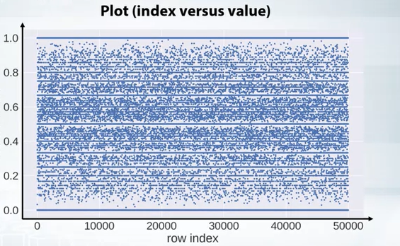
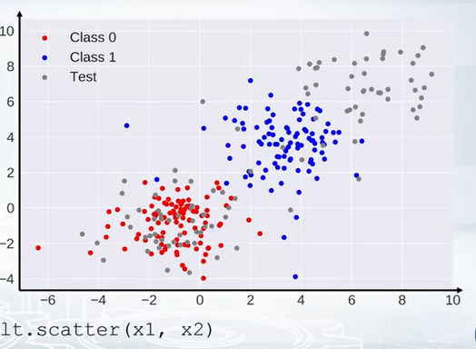
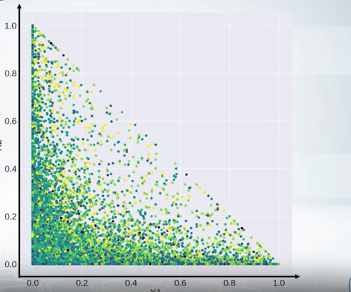
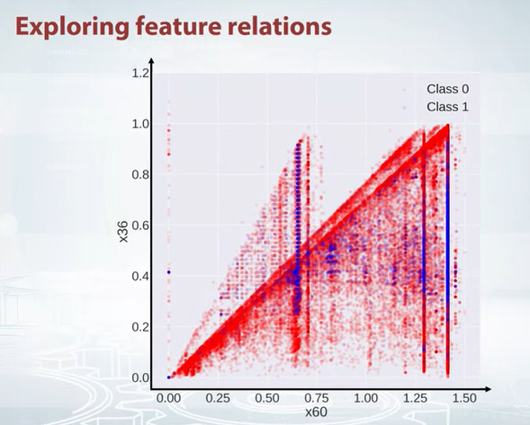
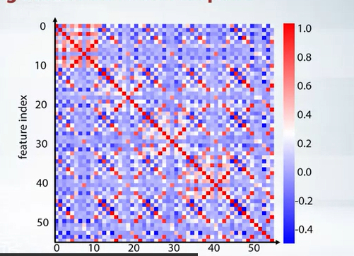
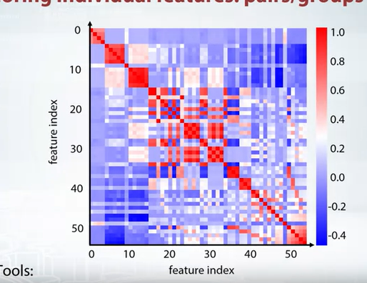
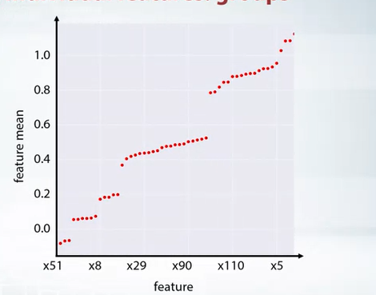

2 EDA on Anonymized Data
3 Anonymized data
Sometimes they do some thing so that one can’t get the required information from the data. e.g. company wants to keep the information about the customer private.
- Then words can be replaced by some other words. I want -> 7ugy 972h etc.
In case of tabular data, they just try to hide column name with variable x1, x2 or y1, y2 etc. And also column value is replaced by some hashvalue sometimes.
4 What can be done as a data scientist or competitiona participant?
4.1 1. Explore individual feature
- Guess the meaning of columns.
- Guess the types of columns. Separate them numerical, categorical, ordinal, date, text, etc.
4.2 2. Explore feature relations
- Find relation between pairs.
- Find feature groups.
4.2.1 1. Individual feature
There was a competition, where like there are different features, which were anonymized means the features names are x1, x2, etc. There were some numerical and some hash value, which could be categorical feature.
What the lecturer did, first create a baseline with random forest. fillna with -999, categorical featueres factorize.
Then plot feature importance from this baseline model.
He found that, one feature named as x8 has highest influence on the target variable.
So he starts to invesitage a little bit deeper.
Then tried to find mean and std values. It seems close to 0 and 1. It seems normalized but it is not exactly 0 and 1 but extra decimal places. May be because of train and test.
Then search for other reapeatd values by value counts. It seems there are lots of repeted values.
As we understood them, they are normalized, we tried to find the normalize parameter, means scaling and shift parameter. Lets’s try to find it, or is it actaully possible.
- Search for unique values and sort them.
- Then use np.diff to find the difference between two consecutive values. It seems the values are same all the time.
- Then devide this values with to our sorted array. It is almost 1. May be not 1 because of some numerical error.
- So if we devide this vlaue to our feature, we will get the original values. It is also visible each positive number decimal places are same and also each negative number decimal places are same. This could be part of shifting parameter.
- So we devide to our previous value and substract to decimal place, we get almost integer values.
- After that it seems that we are right direction, because we are getting integer values. However we got shifing value, a fractioanal part, but how to get the full part of shifting value.
- So the lecturer had a hanch. He just tried value counts of integer values. Then he found an extremely different number from other and the value was - 1968 . So he assumed may be it is some kind of year and one person put 0 or forgot to enter, then system converted to 0. So may be the shifting value is 1968. So he tried to substract 1968 from the feature and then he got the original values.
- But how it helps in the competition. One can use different things from it. But at that competition he could not use this feature. But it was very interseting to see how he found the original values.
if there are small features we can see manually. If there are many features.
4.3 2. Explore feature relations
To explore different features, important things can be done is visualization
- Explore individual features
- Histograms
- plots
- statistics
- Explore feature relations
- Scatter plots
- Correlation plots
- Plot(index vs feature statistics)
- And more.
EDA is art and visualization is the tool.
4.3.1 1. Individual features
Sometimes it is misleading. So change number of bins.
Never make a hypothesis from a single plot. Try to plot different things and then make a decision.
Sometimes in histogram you will see some spikes. It could be anything. Actually in particular case the organizer put the missing vlaue with its mean. We can change this value with other than mean.
we can also plot x is index and y is feature value. Not conenct with line but with circles only.
python plt.plot(x,'.' )
index_image If we see horizontal line in such plots, it means there are repeated values and if there is no vertical lines, it means the data is shuffled nicely.
We can also color code based on labels.
Pandas describe function also helps a lot
Also value counts and isnull is very helpfull
4.3.2 2. Feature relation
- Scatter plot
for classificaiton we can color map the label
for regression heatmap can be used.
Also we can compare the scatter plot in trianing and test set is same.

color_code_train_test The following graph show the diagonal realtion. The equation of a diagonal, x1 -> xaxis and x2-> y axis
\[x2<=1 -x1\]
- The equation of diagonal line is $ x1 + x2 = 1 $

Suppose we found this relaiton but how to use them. There are differet ways but for tree based model we can create the difference or ratio of these two features.
If we see the following scatter plot, we can see that there are some outliers. So we can remove them.

scatter plot So how this is helpful, our goal is to generate features. How to generate feature from this plot. As we see two traingles, we can create a feature where each triangle will get a set of points and hope this feature will help.
If we have smaller number of features, we can use pandas for all features together.
It is always good to use scatter plot and histogram in same plot. Scatter plot -> week information about densities, while histogram -> don’t show feature interaction.
We can also create a correlation plot. It is a heatmap. It is very helpfull to find the correlation between features. It is also good to see the correlation between features and labels.
We can also create other matrix other than correlation matrix, How many times, one feature is greater than another feature.
if the matrix is a total mess like following

we can create some kind of clsutering and then plot them, like k means clustering or rows and columnd and reorder those features. The following plot is the result of k means clustering.

4.3.2.1 Feature groups
- New features based on groups
- One important feature plot could
x -> feature y -> feature mean
- If this is random, then may be we will see random. But if we sort them.

- Now we can have close look to each group and use imagination to create new features.
Next post can be found here
Reuse
Citation
@online{goni2022,
author = {Goni, Hasan},
title = {Data {Science} {Steps} to {Follow} - 03},
date = {2022-11-21},
url = {https://hasangoni.quarto.pub/hasan-blog-post/posts/data-science-steps-to-follow-part03},
langid = {en}
}